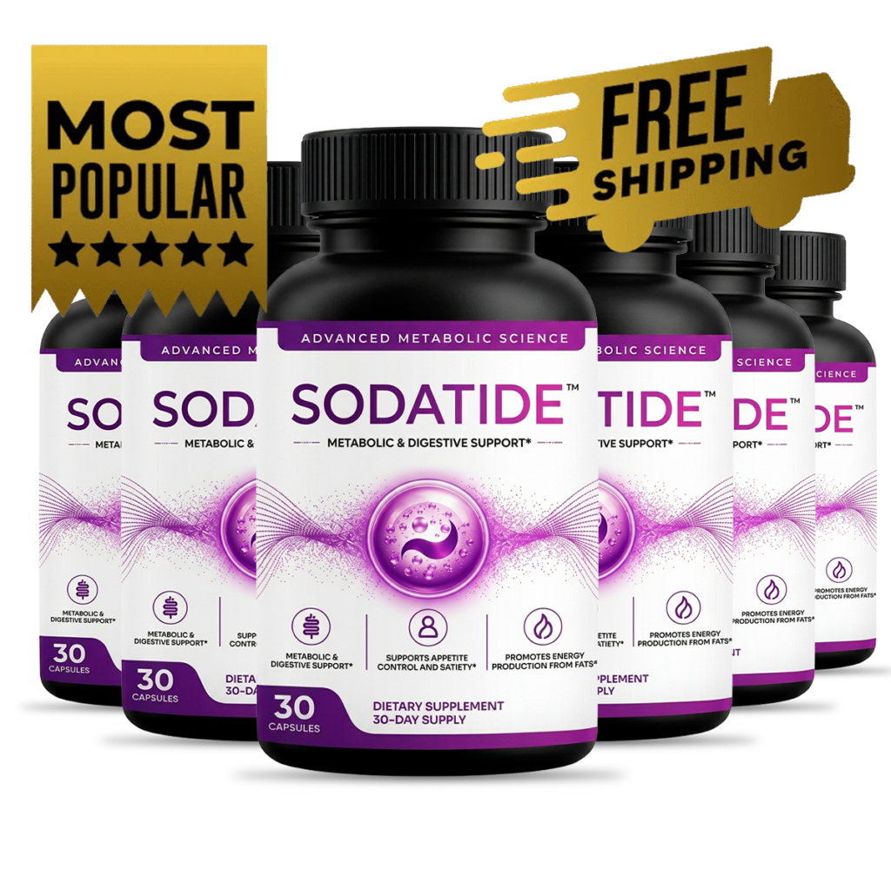

What Is SodaTide And How Does It Work?
Every diet you have ever tried followed the same script — eat less, move more, white-knuckle through the cravings. And every time, the weight crept back. The reason is not willpower.
Researchers now point to something called the gut gate. Your gut microbiome acts like a gate between what you eat and what your body actually does with it. When harmful bacteria crowd that space, the gate stays half-shut. Calories get locked into fat storage instead of being burned for fuel. Hunger hormones keep firing long after a meal. Energy flatlines by mid-afternoon. No amount of discipline can override a gate that is physically jammed.
SodaTide is a daily capsule built around a prebiotic-and-probiotic combination that targets this mechanism directly. Instead of restricting what goes in, it changes what happens once food arrives. The prebiotics feed the specific bacteria linked to a faster metabolism. The probiotics — including a strain called Akkermansia muciniphila that has drawn serious attention in metabolic research — reinforce the intestinal lining and recalibrate the signals your gut sends to your brain about hunger and fullness.
Picture it like a gate on a canal. When the right bacteria are in charge, the gate opens wide — nutrients flow, energy moves, appetite quiets down on its own. When the wrong bacteria take over, the gate jams shut and everything backs up. SodaTide clears the blockage and lets the current run again.
One capsule in the morning. No meal plans. No calorie tracking. The formula works with your body's existing digestive rhythm, not against it — and results build with consistency over weeks, not overnight.
SodaTide Ingredients
The formula is intentionally lean. Three core components, each selected for a specific role in reopening the gut gate.
- Chicory Root Inulin: A prebiotic fiber extracted from chicory root that acts as direct fuel for the bacteria responsible for metabolic speed. It prolongs the feeling of fullness after meals and smooths out the glucose spikes that trigger mid-afternoon crashes and snack runs.
- Potato Resistant Starch: A starch that passes through the stomach undigested and ferments in the intestine, where it feeds the microorganisms that regulate fat storage. It keeps blood sugar levels steady between meals and maintains the kind of even energy that makes skipping a snack feel natural rather than forced.
- Probiotic Blend (3 targeted strains): An exclusive combination of three probiotic strains that strengthens the intestinal wall, produces short-chain fatty acids involved in insulin sensitivity, and resets the hunger-and-satiety signals that years of yo-yo dieting can scramble. This is the component that puts the beneficial bacteria back in control.
Together, these three work as a system — the prebiotics create the environment, the resistant starch stabilizes it, and the probiotics populate it. Nothing competes. Nothing cancels anything else out.
SodaTide Side Effects
The entire formula is plant-based and delivered in vegetarian, lactose-free capsules with no artificial stimulants and no synthetic additives. Every batch is manufactured in the United States in an FDA-registered, GMP-certified facility under strict quality testing.
Because the ingredients are nutrients the body already encounters in food — prebiotic fiber, resistant starch, naturally occurring probiotic strains — the formula works with digestion rather than forcing a pharmacological override. There are no reported widespread adverse reactions when the product is taken as directed.
Some users notice a brief adjustment period during the first few days as the gut microbiome begins to shift — mild changes in digestion that typically resolve on their own. This is a normal part of introducing beneficial bacteria into a system that has been out of balance. As with any dietary supplement, anyone with an existing medical condition or taking prescription medication should consult a healthcare professional before starting.
SodaTide Dosage
One capsule a day. That is the entire routine.
Take it in the morning with a full glass of water, preferably before your first meal. The timing allows the prebiotics and probiotics to establish themselves in the digestive tract before food arrives, giving the formula the best window to support metabolic function throughout the day.
Each bottle contains 30 capsules — a full 30-day supply. After opening, keep the bottle refrigerated to preserve the potency of the live probiotic cultures. The manufacturer recommends a minimum commitment of 90 to 180 days for the gut microbiome to fully rebalance, which is why multi-bottle options are available at a lower per-unit cost. Consistency is what separates a temporary shift from a lasting one.
SodaTide – Refund Policy
Every order of SodaTide is covered by a 60-day money-back guarantee from the date of purchase. That is two full months to take the product as directed and see how your body responds.
The guarantee exists because the manufacturer stands behind what the formula does once the gut gate starts opening. Sixty days is more than enough time for the prebiotic and probiotic combination to begin shifting the microbiome — and the fact that the company offers a full refund within that window tells you something about how confident they are in the result.
For complete terms and conditions, visit the official SodaTide website directly.
SodaTide Customer Reviews
 Raymond Caldwell
Austin, TX
Verified Purchase – 6 Bottles
Raymond Caldwell
Austin, TX
Verified Purchase – 6 Bottles
"I had been stuck at the same weight for close to two years. Ate clean, walked every morning, cut out beer entirely — nothing moved. My wife joked that my metabolism had retired before I did. About five weeks into SodaTide, my pants started fitting differently. Not dramatically, just enough that I stopped dreading the mirror after a shower. By month three, I had dropped two full sizes and the bloating that used to hit me after every dinner was gone. I actually forgot to snack the other day. Forgot. That has never happened."
 Janet Whitfield
Portland, OR
Verified Purchase – 3 Bottles
Janet Whitfield
Portland, OR
Verified Purchase – 3 Bottles
"The cravings were the worst part for me. I could eat a full plate and forty minutes later I would be standing in front of the fridge looking for something sweet. It felt like my body could not register that it had already eaten. A friend mentioned SodaTide and I figured I had nothing left to lose except the weight. Within the first month, the cravings went quiet. Not completely, but enough that I could sit through a movie without thinking about ice cream. My energy in the mornings is completely different now — I wake up and I am actually awake."
 Beverly Henderson
Nashville, TN
Verified Purchase – 6 Bottles
Beverly Henderson
Nashville, TN
Verified Purchase – 6 Bottles
"After I turned fifty-two, everything changed. The weight settled in places it never had before and no amount of walking or salad was touching it. I tried every plan my sister sent me — intermittent fasting, keto, those meal shakes that taste like chalk. Nothing stuck. SodaTide was the first thing that worked without asking me to give up real food. Two months in, I went to a reunion and someone asked me what I had been doing. I just smiled. The gut bloating is gone, the sugar crashes are gone, and I have energy past three o'clock for the first time in years."
SodaTide – Where To Buy
SodaTide is sold exclusively through its official website. It is not available on Amazon, eBay, Walmart, or any third-party marketplace — and that is intentional.
The supplement market is crowded with unauthorized resellers who repackage expired or altered products under legitimate-looking labels. Purchasing from an unverified source means no guarantee that the live probiotic cultures are still viable, no access to the manufacturer's customer support, and no coverage under the 60-day money-back guarantee. The refund policy applies only to orders placed through the official channel.
Before finalizing any purchase, verify that you are on the genuine SodaTide website to ensure product authenticity and full warranty protection.
To ensure you're getting the authentic product, most users choose to visit the official website directly.
Is SodaTide A Scam?
There is nothing about this product that raises a red flag.
The formula is built on a mechanism — the gut gate — that lines up with a growing body of research on how the microbiome influences metabolism, appetite regulation, and fat storage. The ingredients are specific, their roles are well-defined, and the manufacturing meets FDA-registered, GMP-certified standards. The 60-day guarantee removes the financial risk entirely.
That said, no supplement replaces the basics. SodaTide is not a shortcut around consistently poor choices, and it is not going to override years of metabolic imbalance in a week. It is a tool — one that works best when paired with the kind of common-sense habits most people already know they should follow.
If it is not for you, that is genuinely fine. Plenty of people manage their weight a different way, and that works too. But if you have tried the diets, counted the calories, white-knuckled through the cravings, and still found yourself staring at the same number on the scale — this is a different approach. Try it. If it does nothing, you send it back within sixty days and you are out nothing but a few minutes.
As with any supplement, consult a healthcare professional if you have questions specific to your situation.

For those who want to verify product details or check current availability, the official SodaTide website remains the safest and most reliable option.